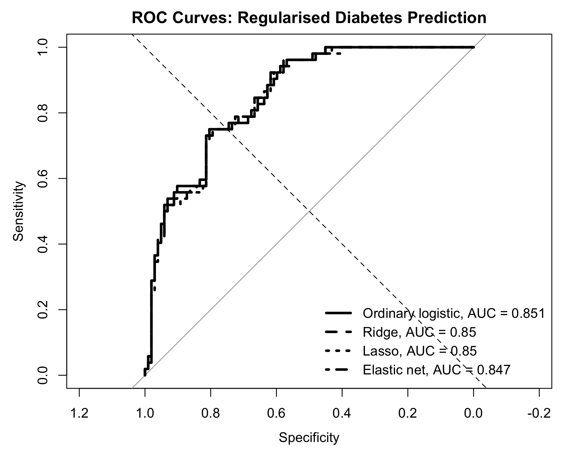
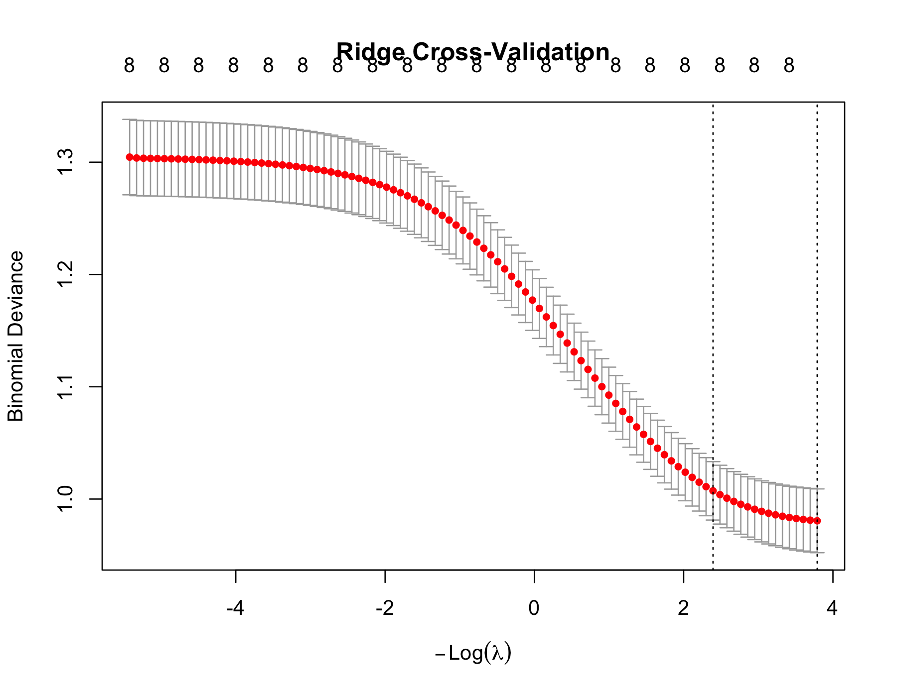
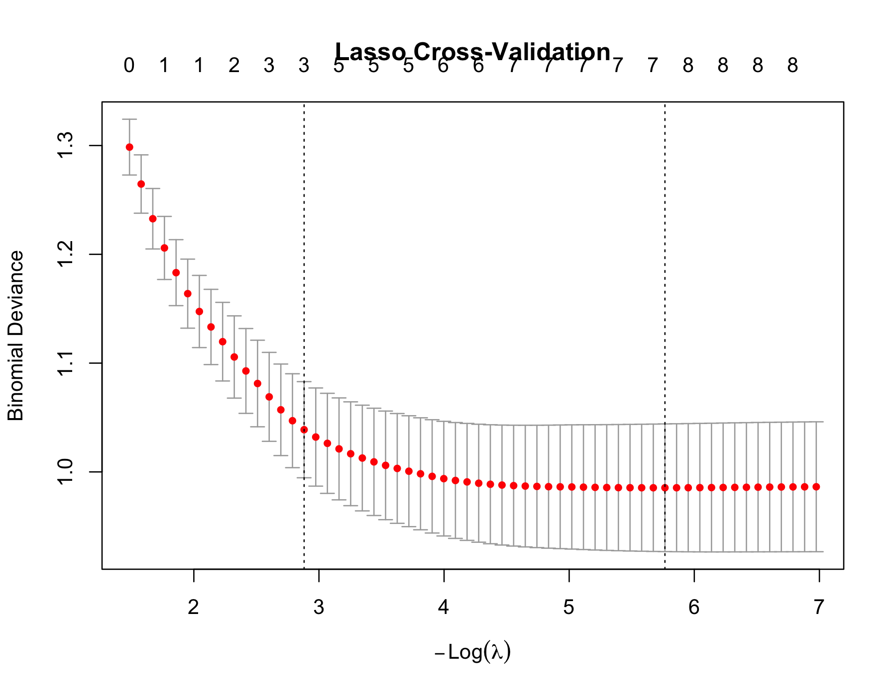
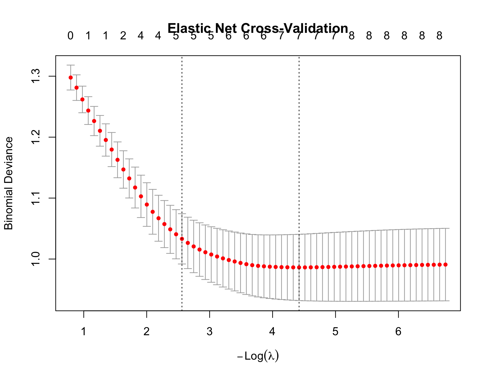

Case study overview
From ordinary logistic regression to regularised regression
In Case Study 1, ordinary logistic regression was used to predict diabetes status from routinely measured clinical characteristics. This second case study asks whether ridge, lasso and elastic net provide a useful alternative.
Can regularised regression methods improve or stabilise diabetes risk prediction compared with ordinary logistic regression?
The aim is not simply to find the model with the highest AUC. The aim is to understand what regularisation changes, how shrinkage behaves, how feature selection should be reported, and why selected features are not automatically causal.
Core message
Regularisation is useful for stabilising coefficients and demonstrating feature selection, but in this modest predictor set the regularised models performed almost the same as ordinary logistic regression.
Results first
What happened in this run?
Main statistical result
Ordinary logistic regression, ridge regression, lasso regression and elastic net all gave very similar test-set discrimination and Brier scores.
Main clinical interpretation
Regularisation did not clearly improve prediction in this example, but it helped demonstrate shrinkage, feature selection and the need for cautious interpretation.
Clinical question
Can regularised models improve diabetes risk prediction?
The clinical question is:
The outcome is diabetes status, with diabetes positive as the event. The predictors are the same routinely measured clinical variables used in Case Study 1: pregnancies, glucose, blood pressure, triceps, insulin, BMI or mass, pedigree score and age.
Teaching-only warning
This is an educational workflow. It should not be interpreted as a deployable diabetes diagnosis or screening model.
Why regularisation matters
Ordinary regression can be unstable
Ordinary logistic regression is a strong baseline, but it can become unstable when the sample size is limited, predictors are correlated, weak predictors are included, or the model starts fitting dataset-specific noise.
Regularised regression adds a penalty to discourage overly large coefficients. The goal is not to make the training fit as strong as possible. The goal is to improve stability and generalisation.
Ordinary logistic
No shrinkage. Familiar and interpretable baseline.
Ridge
Shrinks coefficients. Usually keeps all predictors.
Lasso
Shrinks and selects. Some coefficients can become exactly zero.
Elastic net
Combines ridge and lasso. Useful with correlated predictors.
Interactive shrinkage intuition
Move the penalty slider. Larger penalty values shrink coefficients more strongly.
Models compared
Four models are fitted and compared
| Model | Penalty behaviour | Feature selection? | Teaching purpose |
|---|---|---|---|
| Ordinary logistic regression | No penalty | No | Baseline model |
| Ridge regression | L2 penalty | Usually no | Coefficient shrinkage |
| Lasso regression | L1 penalty | Yes | Sparse model and feature selection |
| Elastic net | Mix of L1 and L2 penalties | Some | Balance shrinkage and selection |
Prediction time point
As in Case Study 1, the prediction time point is the time of clinical assessment. Predictors measured after assessment should not be included because that would create data leakage.
Analysis workflow
Regularised modelling workflow
Load data
Use the same diabetes dataset.
Split data
80% training and 20% testing.
Fit baseline
Ordinary logistic regression.
Fit ridge
Use alpha = 0.
Fit lasso
Use alpha = 1.
Fit elastic net
Use alpha = 0.5.
Predict risk
Generate test-set probabilities.
Compare
Assess AUC and Brier score.
Examine shrinkage
Compare ordinary and ridge coefficients.
Selected features
Review lasso and elastic net terms.
Calibration
Compare predicted and observed risks.
Interpret
Explain findings cautiously.
Performance comparison
AUC and Brier score were almost identical
The four models were compared using test-set AUC and Brier score. AUC measures discrimination, while the Brier score measures probability prediction error.
Model performance comparison

| Model | Test AUC | Brier score | Interpretation |
|---|---|---|---|
| Ordinary logistic regression | 0.851 | 0.149 | Highest AUC and lowest Brier score in this split. |
| Ridge regression | 0.850 | 0.151 | Almost identical discrimination; slightly higher Brier score. |
| Lasso regression | 0.850 | 0.150 | Almost identical discrimination; demonstrates feature selection. |
| Elastic net | 0.847 | 0.152 | Slightly lower AUC in this split; still very similar overall. |
Best interpretation
The result is not “ordinary logistic regression is always better.” The better interpretation is: in this dataset with a modest number of predictors, regularisation did not provide a clear performance gain.
ROC comparison
The ROC curves overlap strongly
The ROC curves are almost on top of each other. This means the models had very similar ability to rank diabetes-positive patients above diabetes-negative patients.
ROC curve comparison

Clinical interpretation
A more advanced model is not automatically better. If a simpler logistic regression model performs similarly, is easier to explain and is adequately calibrated, it may remain a strong candidate model.
Ridge shrinkage
Ridge kept predictors but shrank coefficients
Ridge regression shrinks coefficients towards zero. It usually keeps all predictors in the model. In this run, the selected tuning value was:
Ordinary logistic regression versus ridge coefficients

Coefficient shrinkage examples from the results
Clinical interpretation
Ridge does not mainly answer “which predictors should be removed?” It answers “can we stabilise the model by shrinking coefficients while retaining the predictor set?”
Feature selection
Lasso and elastic net removed triceps in this run
Lasso and elastic net can shrink some coefficients exactly to zero. This means they can perform feature selection. In this run, both methods retained the same broad predictor set and removed triceps.
Selected features from lasso and elastic net

Retained by both models
Lasso and elastic net retained the following non-zero predictors:
Removed by both models
Triceps was removed by lasso and elastic net in this fitted workflow. This does not prove that skinfold thickness has no clinical relevance.
| Term | Lasso coefficient | Elastic net coefficient |
|---|---|---|
| Intercept | -7.92 | -7.39 |
| Pregnant | 0.112 | 0.101 |
| Glucose | 0.0341 | 0.0312 |
| Pressure | -0.0113 | -0.00874 |
| Insulin | -0.000693 | -0.000300 |
| Mass | 0.0801 | 0.0718 |
| Pedigree | 0.701 | 0.605 |
| Age | 0.0142 | 0.0136 |
Do not overclaim
“Selected by lasso” means selected for prediction in this dataset and modelling workflow. It does not mean “causal”, “biologically proven” or “the only clinically relevant predictor set”.
Calibration
Regularisation did not remove calibration uncertainty
Calibration assesses whether predicted probabilities agree with observed risks. A regularised model can have a good AUC and still be poorly calibrated.
Calibration comparison

Interpretation
The calibration plots are broadly similar. Some points are close to the diagonal line, but there is visible instability, especially in the middle predicted-risk groups. This supports a cautious interpretation of predicted probabilities.
Cross-validation
Regularised models are chosen across penalty strengths
Ridge, lasso and elastic net use cross-validation to select the penalty strength. The vertical dashed lines in the plots show common lambda choices, including the value that minimises cross-validation error and a more regularised value within one standard error.
lasso lambda.min = 0.003134162
elastic net lambda.min = 0.01202208
Ridge cross-validation

Lasso cross-validation

Elastic net cross-validation

Interpretation
Regularisation is not one fixed model. It is a family of models across different penalty strengths. The chosen lambda should be selected inside the training workflow, not by repeatedly checking the final test set.
Critical appraisal
What could go wrong?
1. Feature selection may be unstable
Lasso and elastic net may select different predictors if the train/test split changes.
2. Selected predictors are not causal
A selected predictor helped prediction in this dataset. That does not prove it causes diabetes.
3. Test-set tuning can bias performance
If the test set is used repeatedly to choose models, performance estimates can become too optimistic.
4. AUC is not enough
A model with high AUC may still be poorly calibrated and clinically unhelpful.
5. Regularisation is not always better
In this example, ordinary logistic regression performed about as well as regularised models.
6. Educational data may not generalise
The Pima dataset is useful for teaching but should not be treated as a deployable clinical dataset.
Before real-world use
A diabetes prediction model would require:
- careful data quality assessment;
- clinically justified predictor selection;
- missing data handling;
- internal validation;
- external validation;
- calibration assessment;
- threshold analysis;
- decision curve analysis;
- fairness and subgroup performance checks;
- transparent reporting.
Reflection questions
Check your understanding
Questions
- What is the outcome in this case study?
- What is the positive class?
- Why might ordinary logistic regression overfit?
- What does ridge regression do to coefficients?
- Does ridge usually remove predictors?
- What does lasso do differently from ridge?
- Which predictor was removed by lasso and elastic net in this run?
- What does elastic net combine?
- Why are selected predictors not automatically causal?
- Which model had the highest test AUC in this run?
- Which model had the lowest Brier score in this run?
- Why is AUC alone not enough?
- Why does calibration still matter after regularisation?
- Why should the test set not be used repeatedly for tuning?
- What additional validation would be needed before clinical use?
Show suggested answers
The outcome is diabetes status, with diabetes positive as the event. Ordinary logistic regression can overfit when data are limited, predictors are correlated or weak predictors are included. Ridge shrinks coefficients but usually keeps predictors. Lasso can shrink some coefficients exactly to zero, allowing feature selection. Elastic net combines ridge and lasso behaviour. In this run, triceps was removed by lasso and elastic net. Ordinary logistic regression had the highest AUC and lowest Brier score, but differences were small. AUC is not enough because calibration and clinical usefulness still matter. External validation would be needed before clinical use.
Related course material
Code and figures
Reproducible R workflow
The R code for this case study is:
r/C2_regularised_diabetes_prediction_case_study.R
This script compares ordinary logistic regression, ridge regression, lasso regression and elastic net.
After running the script from the course folder, the figures should be saved in:
figures/
Expected output files:
- figures/regularised_diabetes_model_performance.png
- figures/regularised_diabetes_ridge_shrinkage.png
- figures/regularised_diabetes_selected_features.png
- figures/regularised_diabetes_calibration_comparison.png
- figures/regularised_diabetes_roc_comparison.png
- figures/regularised_diabetes_ridge_cv.png
- figures/regularised_diabetes_lasso_cv.png
- figures/regularised_diabetes_elastic_net_cv.png
Download R script Back to case studies
Regularised regression is useful for stabilising prediction models and reducing overfitting, but it does not automatically improve performance. In this case study, ordinary logistic regression, ridge regression, lasso regression and elastic net performed very similarly. Ridge demonstrated coefficient shrinkage, while lasso and elastic net demonstrated feature selection by removing triceps. Selected predictors should be interpreted cautiously, and model performance should be assessed using validation, calibration, Brier score and clinical reasoning rather than AUC alone.